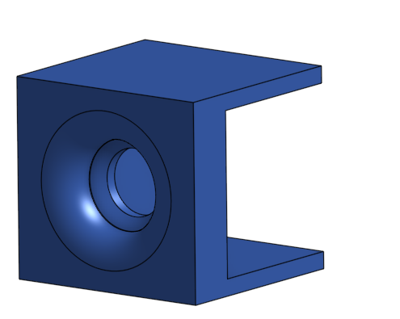

The interference problem was established in Phase One, Step Three. This step is about actually building the solution.
Three HDMI switches, one per monitor. All three share the same IR remote frequency — any button press hits all of them at once. You can't independently route one monitor without dragging the others along for the ride.
The fix: give each switch its own dedicated IR emitter, aimed directly into a shroud that blocks outside light from reaching the receiver. Each switch only hears its own signal.

Source: Self made VIA Onshape
A Raspberry Pi Pico W acts as the routing brain. Three GPIO pins, each connected to one IR LED. When a switch selection comes in, the Pico fires the right emitter. That's it.
Built-in WiFi is the main reason — it opens the door to a soft UI later on, whether that's a touchscreen wired directly to it or a phone-based interface over the local network. I also have a compatible touchscreen that fits the Pico W.
That said, it's not locked in. I also have an Arduino Uno R3 as a fallback. No WiFi on the Uno, so control would go through serial — functional but limiting. The Pico is the plan; the Arduino is the backup.
Instead of cycling through inputs on each switch manually, the system can issue direct selections to any switch independently.
One command. No buttons on the back of a monitor. Three cheap HDMI switches behaving like an addressable routing system.